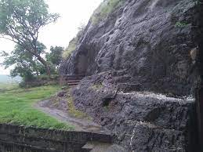

Sabudana Khichadi
Sabudana Khichdi is commonly prepared in maharashtra during the fasting season of Navratri.
A Historic Town
Ahmednagar is a city in Ahmednagar district in the state of Maharashtra, India, about 120 km northeast of Pune and 114 km from Aurangabad. Ahmednagar takes its name from Ahmad Nizam Shah I, who founded the town in 1494 on the site of a battlefield where he won a battle against superior Bahamani forces. It was close to the site of the village of Bhingar. With the breakup of the Bahmani Sultanate, Ahmad established a new sultanate in Ahmednagar, also known as Nizam Shahi dynasty. ... Ahmednagar has several dozen buildings and sites from the Nizam Shahi period. Ahmednagar Fort, once considered almost impregnable, was used by the British to house Jawaharlal Nehru and other Indian Nationalists before Indian independence. A few rooms there have been converted to a museum. During his confinement by the British at Ahmednagar Fort in 1944, Nehru wrote the famous book The Discovery of India. Ahmednagar is home to the Indian Armoured Corps Centre & School (ACC&S), the Mechanised Infantry Regimental Centre (MIRC), the Vehicle Research and Development Establishment (VRDE) and the Controllerate of Quality Assurance Vehicles (CQAV). Training and recruitment for the Indian Army Armoured Corps takes place at the ACC&S. Ahmednagar is a relatively small town and shows less development than the nearby western Maharashtra cities of Mumbai and Pune. Ahmednagar is home to 19 sugar factories and is also the birthplace of the cooperative movement. Due to scarce rainfall, Ahmednagar often suffers from drought. Marathi is the primary language for daily-life communication. Ahmednagar has recently published a plan of developing the city by year 2031.


The Dhokeshwara Cave is a large hall with triple cells, on the east side of one of two rugged hills rising from a stony plateau. The largest is 18.28m deep and 13.7m wide, front open and supported by two massive square pillars and two pillars and two massive pilasters, a little inside of these another similar row supports a great architrave running right across the temple, and within this again is the shrine, hollowed out of a rectangular block left standing from floor to roof, and surrounded by dark passage.
The chief object of worship is a linga is in central shrine. The caves are assignable to 8th century AD.


At a distance of 6 km from Ratanwadi, 23 km from Bhandardara, 183 km from Pune & 197 km from Mumbai, Ratangad is an ancient hill fort situated at Ratanwadi village in Ahmednagar district of Maharashtra. Ratangad is very popular place for trekking in Maharashtra and also one of the famous Bhandardara tourist places. The fort is located at a height of 4250 feet. Ratangad Fort is 400 year old fort, which was used by Maratha warrior Shivaji Maharaj.
The fort has four gates known as Ganesh, Hanuman, Konkan and Trimbak. The best time to visit Ratangad is from October to December. Valley of Sandhan is a one-and-a-half-kilometer distance from Samrad village in Ahmednagar district, on the west side of the Bhandardara region. All year round, there is crowd except for four months of rainy season. The way in the valley becomes so tapering that sunlight does not reach the ground in many places. It is a memorable experience for a trip to Sandhan valley while witnessing the magnificence of Sahyadri in front of the Ajoba Mountains, Ratan Gad and the Alang-Madan-Kulang fort and the Kalsubai peak. It is said that the depth of the number two in the continent is in Asia.
Located at some 80 kms away from Ahmednagar city in Karjat Taluka in village Rehkuri. Rehkuri is home to the sanctuary of rare and famous animal ‘Indian Black Bucks’. The sanctuary is known by the name Rehkuri Black Buck Sanctuary.
The entire Rehkuri Black Buck Sanctuary is spread across 2.17 Sq. Km. of land area.The best time to visit this sanctuary is during summer season. This sanctuary is open round the year. It is estimated that as of today there are some 400 to 500 Indian Black Bucks inside this sanctuary.

Khadka fort in taluka Jamkhed, Kharda fort is known as the oldest Shivapatan .On Mar 11, 1795, Marathas defeated Nizam at this place.This fort was built by Sardar Nimbalkar in 1745. The wall of this fort, the entrance is still in good condition and there is a barawa and mosque inside. There are 12 Jyotirlingas in the village and there is a huge crowd of devotees in month Shravan..
At a distance of 8 km from Khireshwar, 50 km from Bhandardara, 166 km from Pune & 218 km from Mumbai, Harishchandragad is a historical hill fort situated in Ahmednagar district of Maharashtra. The height of the fort is 1,424 meters.. Harishchandragad is very popular place for trekking in Maharashtra and also one of the famous Bhandardara tourist places.
The fort originally dates back to the 6th century during the rule of Kalchuri dynasty. The citadel was built during this era and various caves probably have been carved out in the 11th century AD. Sage Changdev used to meditate here in 14th century AD. Later the fort was under the control of Mughals and Marathas captured it in 1747 AD. Remnants of Microlithic human inhabitants have been discovered here. The various Puranas like Matsyapurana, Agnipurana and Skandapurana have many references about Harishchandragad.


Sabudana Khichdi is commonly prepared in maharashtra during the fasting season of Navratri.
Sev Puri is a sweet, spicy and tangy chaat popular street food of the district.
Puran poli is a sweet flatbread stuffed with a sweet lentil filling made from husked chana dal and jaggery.
Kachori is made with all purpose flour (maida) and has a rich filling made of a large variety of ingredients.
Patodi Rassa Bhaji or patwadi Sabji is a spicy recipe served with Chapati and salad.
Maharashtrian Aamti is really comfort food and has a sweet taste with bit sourness.


Address: National Highway 222, Mukundnagar, Ahmednagar, Maharashtra 414001
Timing: 9am to 8pm.

Address: Savedi Rd, Opposite Chandu Kaka Saraf, Savedi, Ahmednagar, Maharashtra 414003
Timing: 10am to 10pm.

Address: 159, Wadia Park, Tilak Rd, Maliwada, Ahmednagar, Maharashtra 414001
Timing: 9am to 9pm.

Address: Dnyaneshwar Nagar, Ahmednagar, Maharashtra 414003
Timing: 8am to 10pm.

Address: Shahaji Road, Kapad Bazar Ahmednagar - 414001,
Timing: 9am to 9pm.

Address: Ho No 3842,Opposite Kotwali Police Station,Near Manik Chowk, Ahmednagar
Timing: 10am to 8.30pm.

Jalna district is approximately situated at the center part of Maharashtra state of Republic of India and in northern direction of Marathwada region.
Beed is a historical city of possibly medieval origin of India.It is situated on the Deccan Plateau, on the banks of the Bensura river. Bensura is a sub-tributary of Godavari river originating in the hills of Balaghat range.
Latur is a district in Maharashtra state of India. It is the 16th largest city in Maharashtra with district headquarter located in the city. The district comes under Marathwada region of Maharashtra.